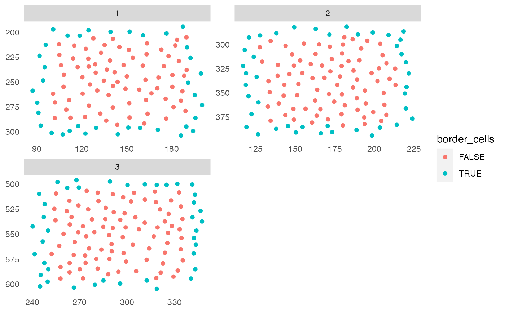

Detection of cells close to the image border for subsequent exclusion from downstream analyses.
findBorderCells(object, img_id, border_dist, coords = c("Pos_X", "Pos_Y"))
| object | a |
|---|---|
| img_id | single character indicating the |
| border_dist | single numeric defining the distance to the image border. The image border here is defined as the minimum and maximum among the cells' x and y location. |
| coords | character vector of length 2 specifying the names of the
|
an object of class(object) containing the logical
border_cells entry in the colData slot.
Nils Eling (nils.eling@dqbm.uzh.ch)
library(cytomapper) data("pancreasSCE") sce <- findBorderCells(pancreasSCE, img_id = "ImageNb", border_dist = 10) plotSpatial(sce, img_id = "ImageNb", node_color_by = "border_cells")